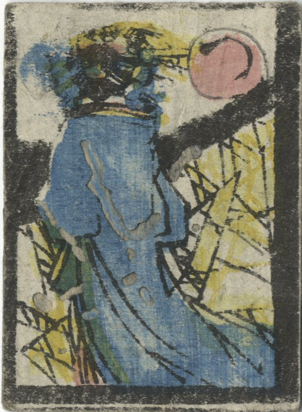

頭に簪を挿し、着物を着た土蜘蛛の精霊が立っている。後ろ姿である。
著作者：一橋齋艶長／出典：親書誌：U426_nichibunken_0397：妖怪かるた；ヨウカイ カルタ／日付：2015／資源識別子：U426_nichibunken_0397_0001_0041
Copyright (c)2010- International Research Center for Japanese Studies, Kyoto, Japan. All rights reserved.